The ggDoE package provides an easy approach to creating commonly used graphs in Design of Experiments with the R package ggplot2. The following plots are currently available in ggDoE:
- Alias Matrix
- Box-Cox Transformation
- Lambda Plot
- Boxplots
- Regression Diagnostic Plots
- Half-Normal Plot
- Interaction Effects Plot for a Factorial Design
- Main Effects Plot for a Factorial Design
- Contour Plots for Response Surface Methodology
- Pareto Plot
- Two Dimensional Projections of a Latin Hypercube Design
The following datasets/designs are included in ggDoE as tibbles:
-
adapted_epitaxial: Adapted epitaxial layer
experiment obtain from the book
“Experiments: Planning, Analysis, and Optimization, 2nd Edition”
ggDoE::adapted_epitaxial
#> # A tibble: 16 × 7
#> A B C D ybar s2 lns2
#> <dbl> <dbl> <dbl> <dbl> <dbl> <dbl> <dbl>
#> 1 -1 -1 -1 1 14.6 0.270 -1.31
#> 2 -1 -1 -1 -1 13.6 0.291 -1.23
#> 3 -1 -1 1 1 14.2 0.268 -1.32
#> 4 -1 -1 1 -1 14.0 0.197 -1.62
#> 5 -1 1 -1 1 14.6 0.221 -1.51
#> 6 -1 1 -1 -1 13.9 0.205 -1.59
#> 7 -1 1 1 1 14.4 0.222 -1.51
#> 8 -1 1 1 -1 14.1 0.215 -1.54
#> 9 1 -1 -1 1 14.7 0.269 -1.31
#> 10 1 -1 -1 -1 13.7 0.272 -1.30
#> 11 1 -1 1 1 13.8 0.220 -1.51
#> 12 1 -1 1 -1 13.9 0.229 -1.47
#> 13 1 1 -1 1 14.6 0.227 -1.48
#> 14 1 1 -1 -1 13.9 0.253 -1.37
#> 15 1 1 1 1 14.3 0.250 -1.39
#> 16 1 1 1 -1 14.1 0.192 -1.65-
original_epitaxial: Original epitaxial layer
experiment obtain from the book
“Experiments: Planning, Analysis, and Optimization, 2nd Edition”
ggDoE::original_epitaxial
#> # A tibble: 16 × 7
#> A B C D ybar s2 lns2
#> <dbl> <dbl> <dbl> <dbl> <dbl> <dbl> <dbl>
#> 1 -1 -1 -1 1 14.8 0.00312 -5.77
#> 2 -1 -1 -1 -1 13.9 0.00494 -5.31
#> 3 -1 -1 1 1 14.8 0.00333 -5.70
#> 4 -1 -1 1 -1 13.9 0.000926 -6.98
#> 5 -1 1 -1 1 14.9 0.00269 -5.92
#> 6 -1 1 -1 -1 14.2 0.00415 -5.48
#> 7 -1 1 1 1 14.9 0.0165 -4.11
#> 8 -1 1 1 -1 14.0 0.00196 -6.24
#> 9 1 -1 -1 1 14.9 0.215 -1.54
#> 10 1 -1 -1 -1 14.0 0.121 -2.12
#> 11 1 -1 1 1 14.4 0.206 -1.58
#> 12 1 -1 1 -1 13.9 0.226 -1.49
#> 13 1 1 -1 1 14.9 0.147 -1.92
#> 14 1 1 -1 -1 14.0 0.0880 -2.43
#> 15 1 1 1 1 14.8 0.327 -1.12
#> 16 1 1 1 -1 13.9 0.0704 -2.65-
aliased_design: D-efficient minimal aliasing design
obtained from the article
“Efficient Designs With Minimal Aliasing”
ggDoE::aliased_design
#> # A tibble: 12 × 5
#> A B C D E
#> <dbl> <dbl> <dbl> <dbl> <dbl>
#> 1 -1 1 -1 1 1
#> 2 -1 1 1 1 -1
#> 3 -1 -1 1 -1 1
#> 4 1 1 1 1 1
#> 5 1 1 1 -1 -1
#> 6 1 -1 -1 1 -1
#> 7 -1 1 -1 -1 1
#> 8 1 -1 1 1 1
#> 9 1 1 -1 -1 -1
#> 10 -1 -1 1 -1 -1
#> 11 1 -1 -1 -1 1
#> 12 -1 -1 -1 1 -1Alias Matrix
Let \(X_1\) denote the model matrix for the main-effects model (including the intercept) and let \(X_2\) denote the model matrix corresponding to the two-factor interactions.
Suppose the true model is \[ Y = X_1 \beta_1 + X_2 \beta_2 + \epsilon \] where \(\epsilon\) is the vector of residuals with \(\mathbb{E}(\epsilon)=0\), \(\beta_1\) is the vector consisting of the intercept and main effects coefficients and \(\beta_2\) is the vector consisting of the two-factor interactions effects coefficients.
If the experimenter employs the main effects model for estimation, it is well known that the expected value of the least squares estimator \(\hat{\beta}_1\) of \(\beta_1\) is
\[ \mathbb{E}(\hat{\beta}_1) = \beta_1 + A \beta_2 \] where \(A\) is the alias matrix.
We define the alias matrix \(A\) by \[ A = (X_1^T \, X_1)^{-1} \ X_1^T X_2 \]
One can view the color map of the absolute value of the correlations
among the main effects and two-factor interaction columns using the
function alias_matrix()
alias_matrix(design=aliased_design)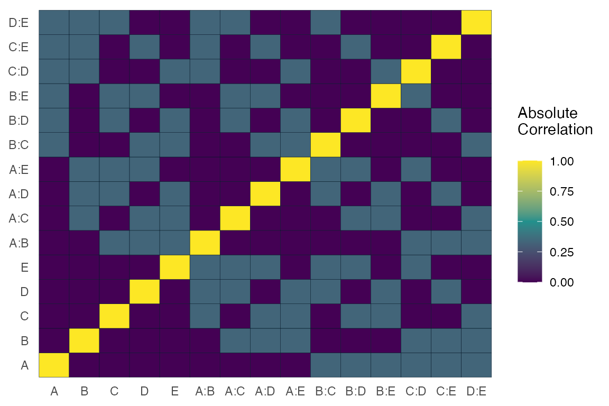
For most functions in ggDoE one can choose to not
display the plot and only return the data/calculations used to construct
the plot by using showplot=FALSE argument. For example, we
can simply return the correlation matrix (not absolute) among
the main effects and two-factor interactions as follows
alias_matrix(design=aliased_design, showplot=FALSE)
#> A:B A:C A:D A:E B:C B:D B:E C:D C:E D:E
#> A 0.000 0.000 0.000 0.000 0.333 -0.333 -0.333 0.333 0.333 0.333
#> B 0.000 0.333 -0.333 -0.333 0.000 0.000 0.000 0.333 -0.333 0.333
#> C 0.333 0.000 0.333 0.333 0.000 0.333 -0.333 0.000 0.000 0.333
#> D -0.333 0.333 0.000 0.333 0.333 0.000 0.333 0.000 0.333 0.000
#> E -0.333 0.333 0.333 0.000 -0.333 0.333 0.000 0.333 0.000 0.000Box-Cox Transformation
Box-Cox transformation is a transformation of a response variable that often is not normally distributed, to one that does follow approximately a normal distribution. The transformation performed is as follows
\[ y(\lambda) = \begin{cases} \frac{y^\lambda -1}{\lambda}, & \text{if} \, \lambda \neq 0 \\ \log y, & \text{if} \, \lambda =0 \end{cases} \]
The “optimal value” of \(\lambda\) is one which results in the best approximation of a normal distribution curve.
Some common Box-Cox transformations are
| \(\lambda\) | \(y(\lambda)\) |
|---|---|
| -2 | \(\frac{1}{y^2}\) |
| -1 | \(\frac{1}{y}\) |
| -\(\frac{1}{2}\) | \(\frac{1}{\sqrt{y}}\) |
| 0 | \(\log y\) |
| \(\frac{1}{2}\) | \(\sqrt{y}\) |
| 1 | \(y\) |
| 2 | \(y^2\) |
model <- lm(s2 ~ (A+B+C+D),data = adapted_epitaxial)
boxcox_transform(model,lambda = seq(-5,5,0.2))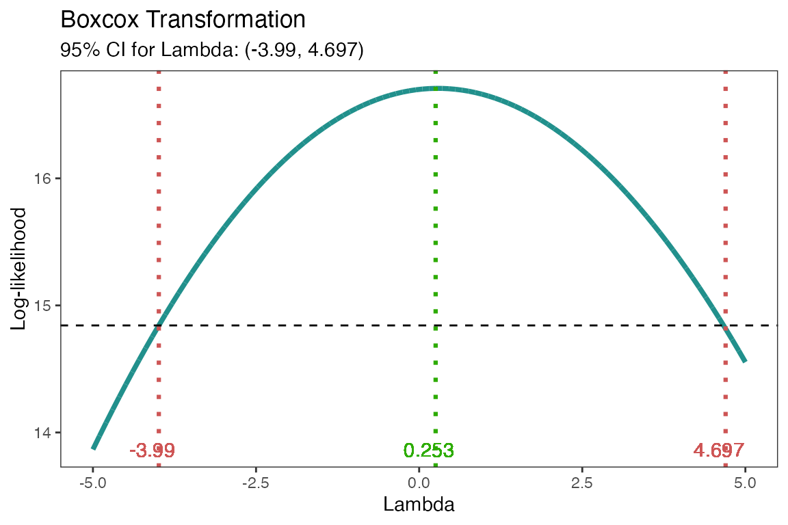
From the above figure, the “optimal value” of \(\lambda=0.253\). A good transformation to
perform would then be \(\log(y)\). The
results can be extracted by using showplot=FALSE argument,
if needed.
boxcox_transform(model,lambda = seq(-5,5,0.2),
showplot = FALSE)
#> # A tibble: 1 × 3
#> best_lambda lambda_low lambda_high
#> <dbl> <dbl> <dbl>
#> 1 0.253 -3.99 4.70The transformation doesn’t always work well, so make sure to check
the diagnostics of the model with the transformed response. See
diagnostic_plots().
Lambda Plot
Obtain the trace plot of the t-statistics calculated for each effect in the model after applying Box-Cox transformation across a specified sequence of lambda values
model <- lm(s2 ~ (A+B+C)^2,data=original_epitaxial)
lambda_plot(model)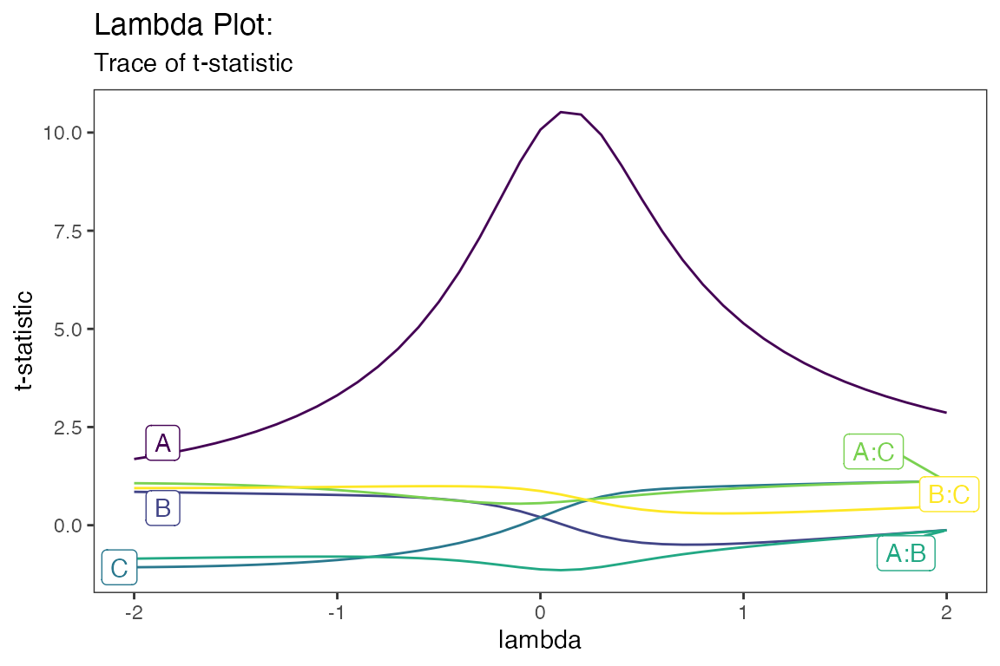
or alternatively,
lambda_plot(model, showplot=FALSE)
#> # A tibble: 41 × 7
#> lambda A B C `A:B` `A:C` `B:C`
#> <dbl> <dbl> <dbl> <dbl> <dbl> <dbl> <dbl>
#> 1 -2 1.69 0.850 -1.07 -0.851 1.07 0.945
#> 2 -1.9 1.77 0.843 -1.07 -0.844 1.07 0.946
#> 3 -1.8 1.86 0.835 -1.06 -0.837 1.06 0.947
#> 4 -1.7 1.97 0.828 -1.05 -0.830 1.05 0.949
#> 5 -1.6 2.09 0.820 -1.04 -0.823 1.04 0.951
#> 6 -1.5 2.23 0.813 -1.02 -0.816 1.03 0.954
#> 7 -1.4 2.38 0.805 -1.01 -0.811 1.01 0.958
#> 8 -1.3 2.57 0.797 -0.984 -0.806 0.986 0.962
#> 9 -1.2 2.78 0.789 -0.957 -0.802 0.961 0.966
#> 10 -1.1 3.02 0.780 -0.925 -0.800 0.931 0.971
#> # … with 31 more rows
#> # ℹ Use `print(n = ...)` to see more rowsBoxplots
Using gg_boxplots() constructs boxplots making it easy
to visually compare the shape, the central tendency, and the variability
of the samples. It is important to note the response and
factor arguments for gg_boxplots() must be
unquoted.
data <- ToothGrowth
data$dose <- factor(data$dose,levels = c(0.5, 1, 2),
labels = c("D0.5", "D1", "D2"))
head(data)
#> len supp dose
#> 1 4.2 VC D0.5
#> 2 11.5 VC D0.5
#> 3 7.3 VC D0.5
#> 4 5.8 VC D0.5
#> 5 6.4 VC D0.5
#> 6 10.0 VC D0.5
gg_boxplots(data,response = len,
factor = dose)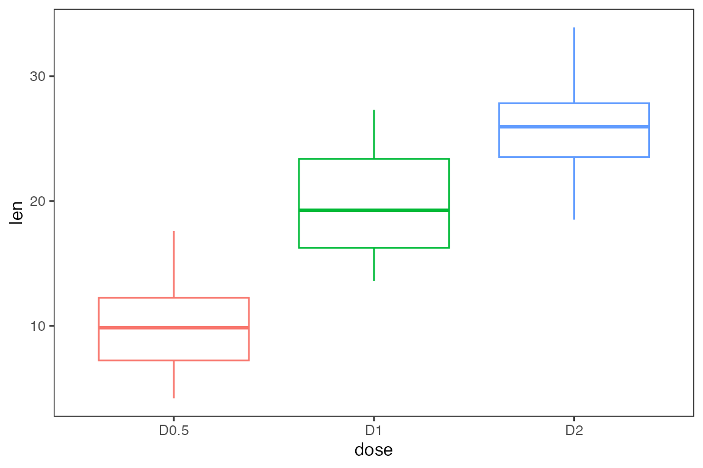
We can group each sample using the group_var argument,
again this argument must be unquoted. With color_palette we
can change the color palette for each of the boxplots. With
color_palette eight options are available:
“viridis”,“cividis”,“magma”,“inferno”,“plasma”,“rocket”,“mako”,“turbo”.
Lastly, one can overlay jittered points to each boxplot using
jitter_points=TRUE.
gg_boxplots(data,response = len,
factor = dose,
group_var = supp,
color_palette = 'viridis',
jitter_points = TRUE)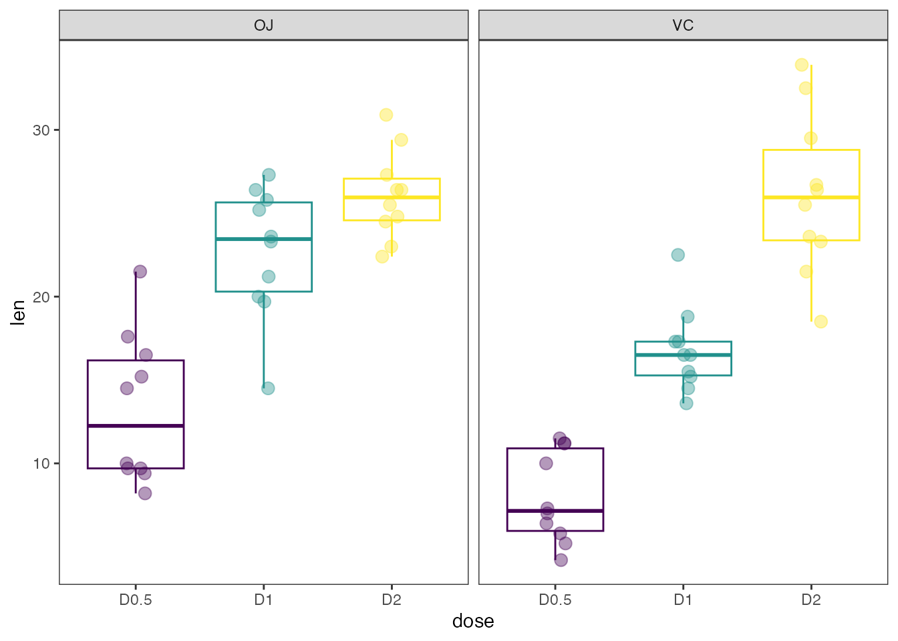
Regression Diagnostic Plots
- Residual vs. Fitted Values
- Normal-QQ plot
- Scale-Location plot
- Residual vs. Leverage
- Cook’s Distance
- Collinearity
model <- lm(mpg ~ wt + am + gear + vs * cyl, data = mtcars)The default plots in diagnostic_plots() are the first
four in the list mentioned above. However, one can choose any of the six
plots they need. For example if one needs all six plots use
which_plots=1:6.
diagnostic_plots(model, which_plots=1:6)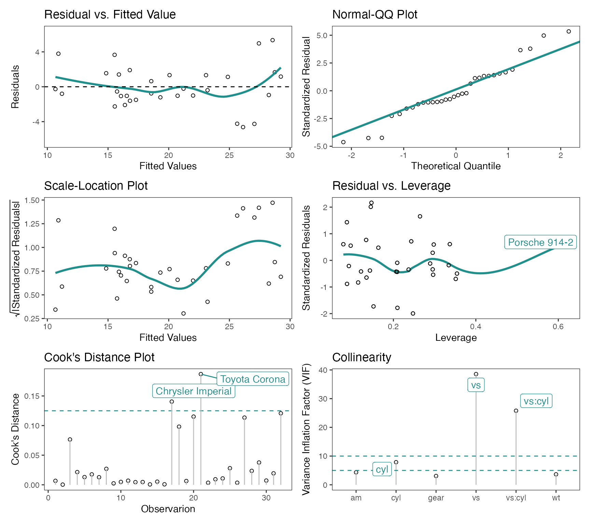
Another example, if one simply requires the Residual vs. Fitted
Values and Cook’s Distance plots, use which_plots = c(1,5).
If one wants to display confidence intervals, use
standard_error=TRUE
diagnostic_plots(model, which_plots=c(1,5),
standard_errors = TRUE)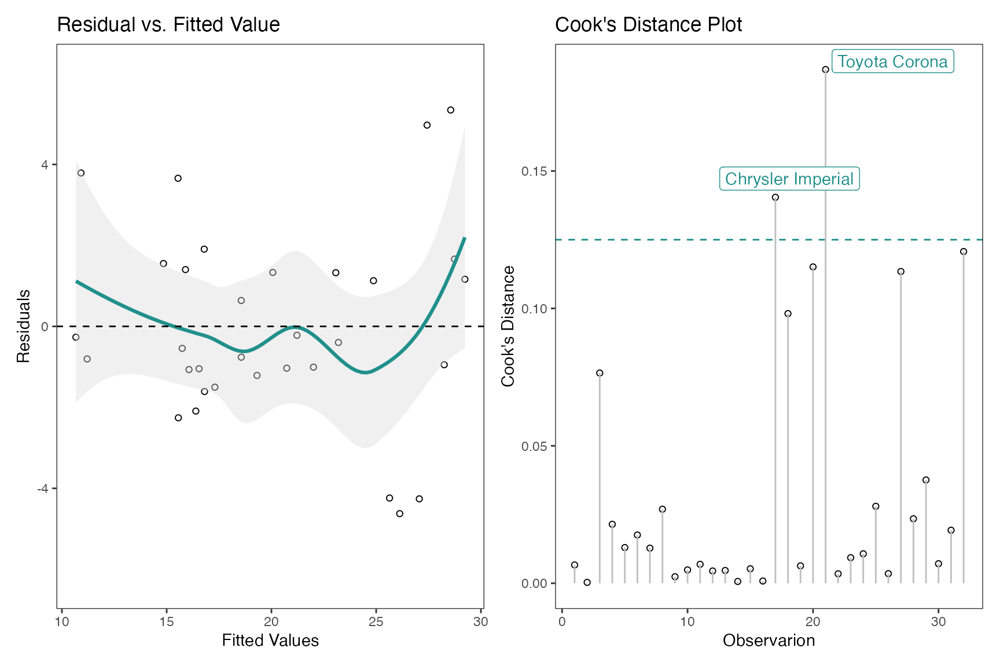
Half-Normal Plot
The Half-Normal plot is a graphical tool used to help identify which
experiment factors have significant effects on the response. In
addition, cutoff line(s) are added for the margin of error (ME) and the
simultaneous margin of error (SME) of the effects. These values are
obtained using unrepx::ME().
m1 <- lm(lns2 ~ (A+B+C+D)^4,data=original_epitaxial)
half_normal(m1)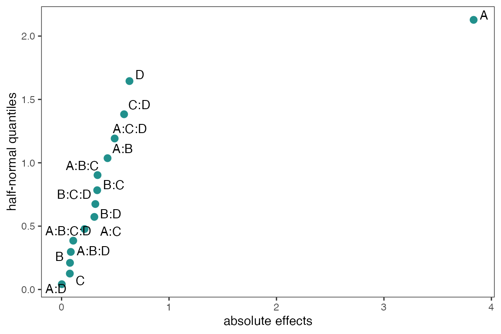
With the method argument there are seven construction
methods to obtain the pseudo standard errors in order to calculate (ME)
and (SME). These methods are “Daniel”, “Dong”, “JuanPena”, “Lenth”
(Default), “RMS”, “SMedian”, “Zahn”, “WZahn”. See
?ggDoE::half_normal for more details and references on each
of the methods.
half_normal(m1,method='Daniel',alpha=0.1,
ref_line=TRUE,label_active=TRUE,
margin_errors=TRUE)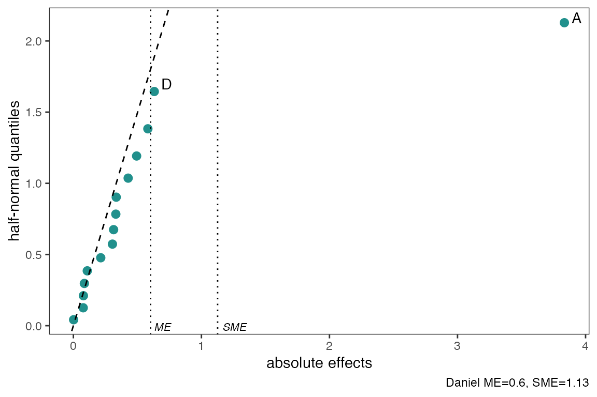
You can change the significance level used to obtain (ME) and (SME)
and determine which factors are active using the alpha
argument. Default is alpha=0.05. Using
label_active argument will only label the active factors in
the experiment.
Using showplot=FALSE will return the needed information
to reproduce/change the above half-normal plot
half_normal(m1,method='Daniel',alpha=0.1,
showplot=FALSE)
#> # A tibble: 15 × 3
#> effects absolute_effects half_normal_quantiles
#> <chr> <dbl> <dbl>
#> 1 A:D 0.00197 0.0418
#> 2 C 0.0768 0.126
#> 3 B 0.0783 0.210
#> 4 A:B:D 0.0858 0.297
#> 5 A:B:C:D 0.109 0.385
#> 6 A:C 0.214 0.477
#> 7 B:D 0.305 0.573
#> 8 B:C:D 0.314 0.674
#> 9 B:C 0.331 0.784
#> 10 A:B:C 0.335 0.903
#> 11 A:B 0.428 1.04
#> 12 A:C:D 0.494 1.19
#> 13 C:D 0.582 1.38
#> 14 D 0.632 1.64
#> 15 A 3.83 2.13Interaction Effects Plot for a Factorial Design
Interaction effects plot between two factors in a factorial design
interaction_effects(adapted_epitaxial,response = 'ybar',
exclude_vars = c('s2','lns2'))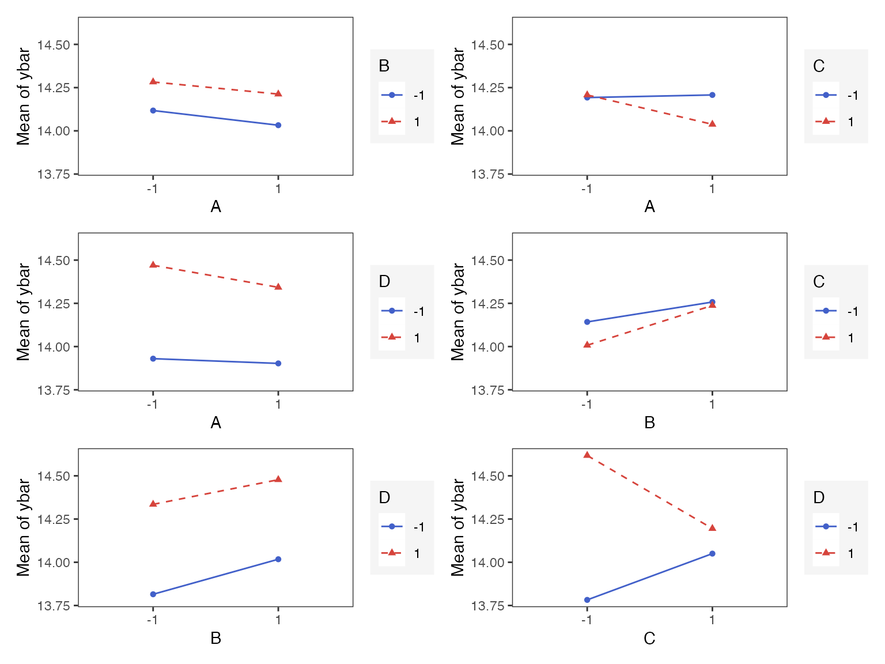
interaction_effects(adapted_epitaxial,response = 'ybar',
exclude_vars = c('A','s2','lns2'),
ncols=3)
Main Effects Plot for a Factorial Design
Main effect plots for each factor in a factorial design
main_effects(original_epitaxial,
response='s2',
exclude_vars = c('ybar','lns2'))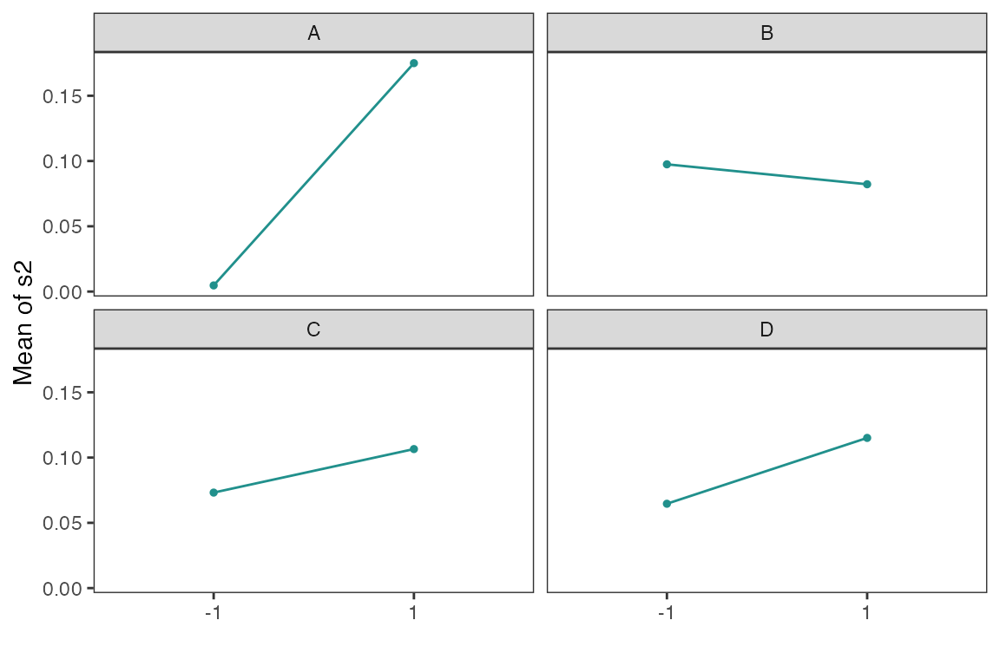
main_effects(original_epitaxial,
response='s2',
exclude_vars = c('A','ybar','lns2'),
color_palette = 'viridis',
ncols=3)
Contour Plots for Response Surface Methodology
Using gg_rsm we can obtain contour plots that display
the fitted surface for an rsm object. It is best to use
rsm object such as the one defined above, as the plots
below are produced using information from an rsm object.
gg_rsm includes an ... argument for additional
arguments from rsm::contour.lm, see
rsm::contour.lm for more details on its arguments.
By default the contour plots produce will be in black and white color
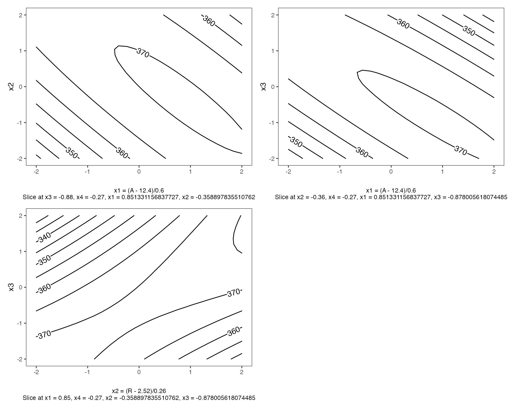
with filled=TRUE, a viridis color scheme is applied.
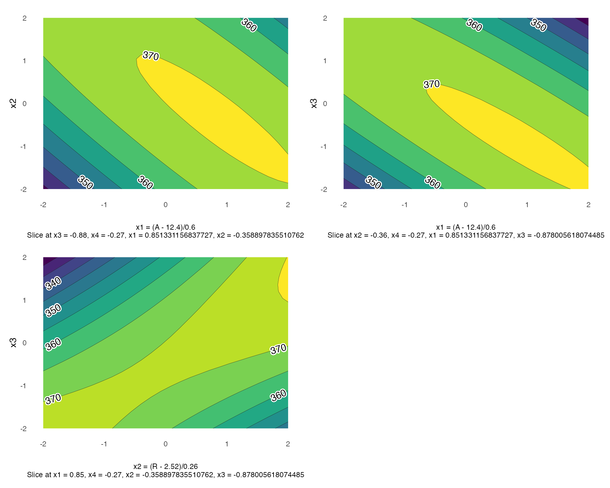
Pareto Plot
Pareto plot is a bar graph with the bars ordered by the size of the effect. In addition, cutoff line(s) are added for the margin of error (ME) and the simultaneous margin of error (SME) of the effects.
m1 <- lm(lns2 ~ (A+B+C+D)^4,data=original_epitaxial)
pareto_plot(m1)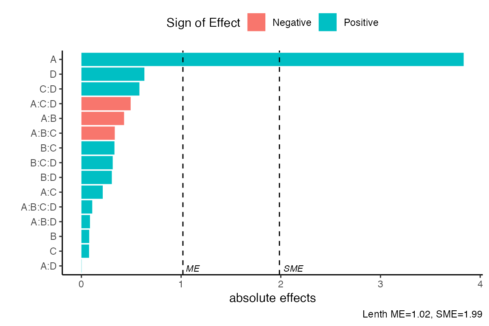
As in the half_normal() function there are seven methods
to compute the pseudo standard errors. For example, we consider ‘Daniel’
construction method using a significance level of \(\alpha=0.1\). Default arguments for
method is “Lenth” and alpha = 0.05.
pareto_plot(m1,method='Daniel',alpha=0.1)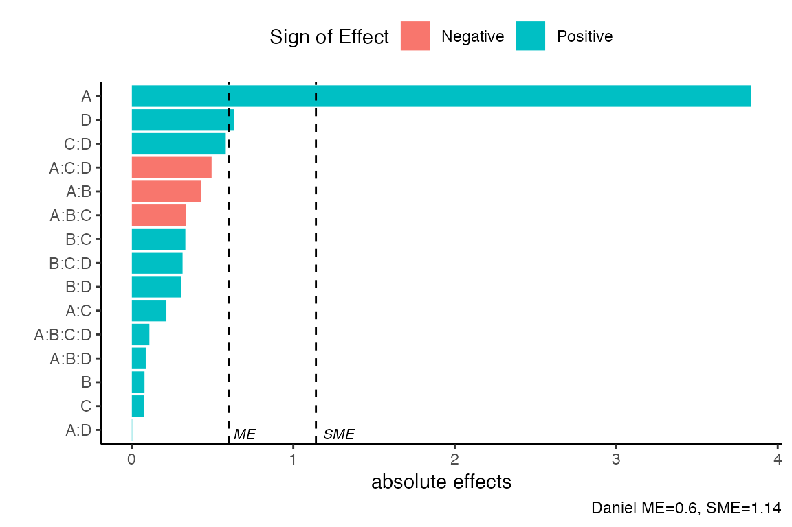
If one uses the showplot=FALSE argument, a list will be
returned with the calculated PSE,ME,SME as well as the data used to
construct the pareto plot.
pareto_plot(m1,method='Daniel',
alpha=0.1, showplot=FALSE)
#> $errors
#> # A tibble: 1 × 4
#> alpha PSE ME SME
#> <dbl> <dbl> <dbl> <dbl>
#> 1 0.1 0.335 0.604 1.13
#>
#> $dat
#> # A tibble: 15 × 3
#> effect_names effects abs_effects
#> <fct> <dbl> <dbl>
#> 1 A:D 0.00197 0.00197
#> 2 C 0.0768 0.0768
#> 3 B 0.0783 0.0783
#> 4 A:B:D 0.0858 0.0858
#> 5 A:B:C:D 0.109 0.109
#> 6 A:C 0.214 0.214
#> 7 B:D 0.305 0.305
#> 8 B:C:D 0.314 0.314
#> 9 B:C 0.331 0.331
#> 10 A:B:C -0.335 0.335
#> 11 A:B -0.428 0.428
#> 12 A:C:D -0.494 0.494
#> 13 C:D 0.582 0.582
#> 14 D 0.632 0.632
#> 15 A 3.83 3.83Two Dimensional Projections
This function will output all two dimensional projections from a Latin hypercube design.
Below is an example from generating a random Latin hypercube design
using the R package lhs
set.seed(10)
random_LHS <- lhs::randomLHS(n=15, k=4)
twoD_projections(random_LHS,ncols=3,grid = TRUE)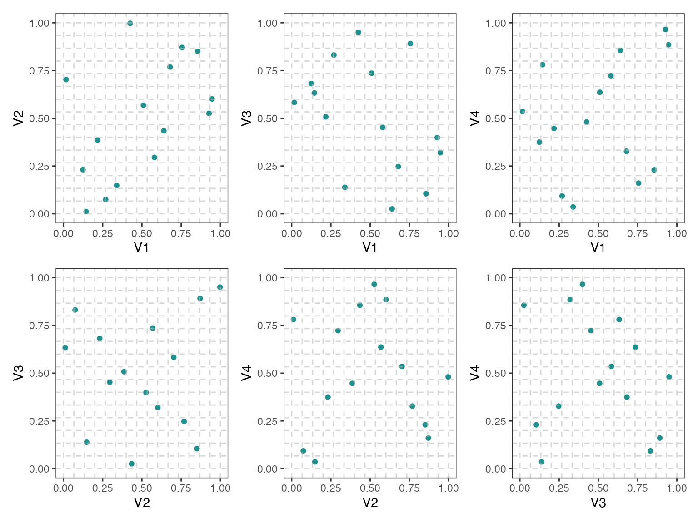
Below is an example of a maximin Latin hypercube design with red color points and no grid (default setting)
maximin_LHS <- lhs::maximinLHS(n=15, k=4)
twoD_projections(maximin_LHS,ncols=3,point_color = 'red')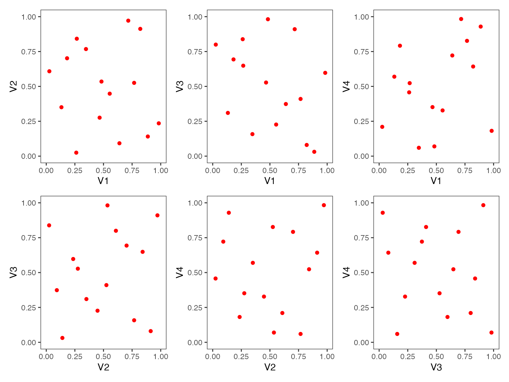